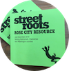

Re-source
Rose City Resource
The Rose City Resource guide is a comprehensive guide to the public services and assistance programs in the Portland Oregon metropolitan area. Hardcopies of RCR can be picked up at Street Roots, 211 NW Davis St, Portland, OR. Alchemy's Re-source thanks Street Roots for their hard work and inspiration to provide there resources online.
How to use this guide
- Choose a resource type that you are looking for.
- On the resources page, uncheck neighborhood boxes if you don't want to see results from those neighborhoods.
- Add to your "Most Used Resources" list by checking the box next to a resource name and clicking the "Add to Faves" button on the bottom of your screen.
- Click the STAR to get to your "Most Used Resources".
- Click on the toilet emoji to get to a map of public restrooms.
JBJ is often laughing, playing roller derby, and hanging with their person and pup.
Tali laughs for the whole world, but sees the individual human heart.
Jasmin walks the line of authority and authenticity with a heart of gold.
Aaron is the cool dad keeping us grounded and reminding us to wear helmets.
Sam wrote all these bios and it is hard to be nice about yourself.